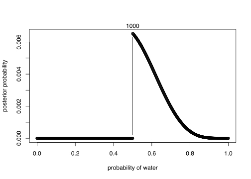

Homework: week 1
- Suppose the globe tossing data (Chapter 2) had turned out ot be 4 water in 15 tosses. Construct the posterior distribution, using grid approximation. Use the same flat prior as in the book.
grid_size = 1000
n_water = 4
p_grid = seq(from = 0, to = 1, length.out = grid_size)
# define prior
prior = rep(1, grid_size)
# compute likelihood at each value in grid
likelihood = dbinom(n_water, size = 9, prob = p_grid)
# compute product of likelihood and prior
unstd.posterior = likelihood * prior
# standardise the posterior, so it susms to 1
posterior = unstd.posterior / sum(unstd.posterior)
# plot
plot(p_grid, posterior, type = "b",
xlab = "probability of water",
ylab = "posterior probability")
mtext(grid_size) 
- Start over in 1, but now use a prior that is zero below \(p\) = 0.5 and a constant above \(p\) = 0.5. This corresponds to prior inforamtion that a majority of the Earth’s surface is water. What difference does the better prior make?
grid_size = 1000
n_water = 4
p_grid = seq(from = 0, to = 1, length.out = grid_size)
# define prior
prior = ifelse(p_grid < .5, 0, 1)
# compute likelihood at each value in grid
likelihood = dbinom(n_water, size = 9, prob = p_grid)
# compute product of likelihood and prior
unstd.posterior = likelihood * prior
# standardise the posterior, so it susms to 1
posterior = unstd.posterior / sum(unstd.posterior)
# plot
plot(p_grid, posterior, type = "b",
xlab = "probability of water",
ylab = "posterior probability")
mtext(grid_size) 
- For the posterior distribution from 2, compute 89% percentile and HPDI intervals. Compare the widths of these intervals. Which is wider? Why? If you had only the information in the interval, what might you misunderstand about the shape of the posterior distribution?
samples = sample(p_grid, prob = posterior, size = 1e4, replace = T)
rethinking::PI(samples)## 5% 94%
## 0.5085085 0.7497497rethinking::HPDI(samples)## |0.89 0.89|
## 0.5005005 0.7097097# PI is wider, and neither tells you that the highest point is just after 50%.